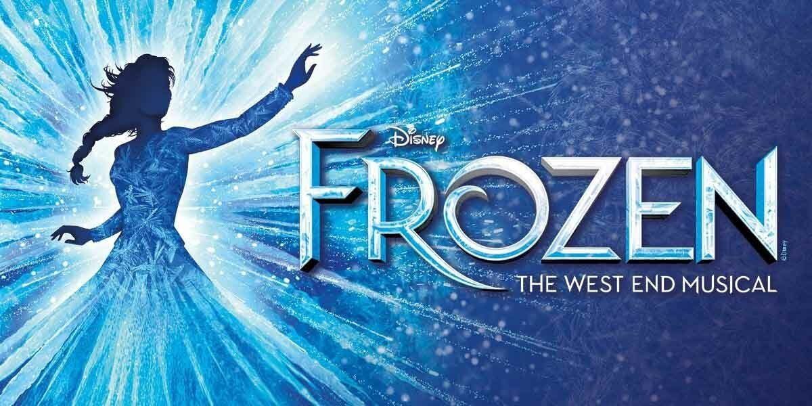
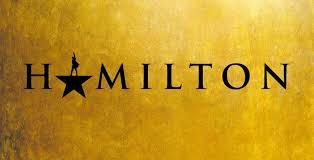
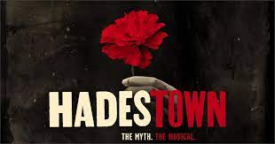

"Wicked: Życie i czasy Złej Czarownicy z Zachodu" to alternatywne spojrzenie na historię, jaką znamy z "Czarnoksiężnika z krainy Oz". Poznamy wydarzenia widziane z perspektywy wiedźm z krainy Oz. Opowieść zaczyna się jeszcze przed przybyciem Dorotki i zaraz po nim. Poznamy losy niezwykłej przyjaźni Elfaby, która stała się Złą Czarownicą z Zachodu i Galindy, dowiemy się również, co tak naprawdę stało się w pełnej tajemnic krainie Oz i kim jest słynny Czarnoksiężnik.
Przykładowa piosenka
Frozen

W „Krainie Lodu” nieustraszona optymistka Anna sprzymierza się z mrukliwym człowiekiem gór Kristoffem i jego wiernym reniferem Svenem. Podczas bohaterskiej podróży zmierzą się z pogodą jak na Mount Everest, spotkają tajemnicze trolle i zabawnego bałwana o imieniu Olaf, aby odnaleźć siostrę Anny, Elsę, której magiczna moc uwięziła królestwo Arendelle w okowach wiecznej zimy.
Przykładowa piosenka
Król rozrywki
Oryginalny musical inspirowany życiem P. T. Barnuma, w którego wciela się Hugh Jackman. Barnum był wizjonerem, którego marzeniem było stworzenie największego show na świecie – spektaklu i celebracji jego niezwykle bujnej wyobraźni, która porwie publiczność na całym świecie.
Przykładowa piosenka
Glee
Nauczyciel języka hiszpańskiego, w jednej z amerykańskich szkół średnich, Will Schuester (Matthew Morrison), chcąc przywrócić szkolny Glee Club do dawnej świetności, postanawia zostać jego kierownikiem. Nie spodziewa się tylko przeciwności jakim będzie musiał stawić czoło: od niechęci i sceptycyzmu uczniów, do podłych intryg trenerki (Jane Lynch) szkolnej drużyny cheerleaderek.
Przykładowa piosenka
Hamilton

„Hamilton” jest historią o Ameryce z przeszłości opowiedzianą przez Amerykę współczesną. Dzięki łączącej hip-hop, jazz, R&B i Broadway ścieżce dźwiękowej, „Hamilton” stworzył na podstawie historii ojca założyciela Ameryki, Alexandra Hamiltona, rewolucyjne wydarzenie teatralne – musical, który wywarł głęboki wpływ na kulturę, politykę i edukację. Nagrany w Richard Rodgers Theatre na Broadwayu w czerwcu 2016 roku film w wyjątkowo kameralny sposób przenosi widzów w świat spektaklu. Muzykę, słowa i libretto do „Hamiltona” napisał Lin-Manuel Miranda, musical wyreżyserował Thomas Kail, a całość zainspirowana jest książką „Alexander Hamilton” Rona Chernowa.
Przykładowa piosenka
Hadestown

Hadestown to musical autorstwa Anaïs Mitchell. Jest to nowa wersja antycznego mitu o Orfeuszu i Eurydyce. Hades i Persefona się nie dogadują. Władca krainy umarłych nie pozwala wrócić bogini do świata żywych. Powoduje to wieczną zimę, która jest przyczyną nieszczęść wielu osób. Orfeusz pracuje jednak nad piosenką, która ma wszystko naprawić. Przez pracę nad nią nie zauważa, że jego ukochana trafia do podziemia. Jak w oryginalnej wersji utalętowany muzyk idzie uratować swoją ukochaną.
Przykładowa piosenka
Mamma mia!
Film opowiada historię młodej i ślicznej Sophie (Amanda Seyfried), która niebawem ma wyjść za mąż. Dziewczyna chciałaby, aby do ślubnego kobierca zaprowadził ją jej ojciec. Problem w tym, że nigdy go nie poznała. Jej matka, Donna (Meryl Streep), zdradza tożsamość trzech mężczyzn, z którymi przed laty coś ją łączyło. Cała trójka zostaje zaproszona na ślub.